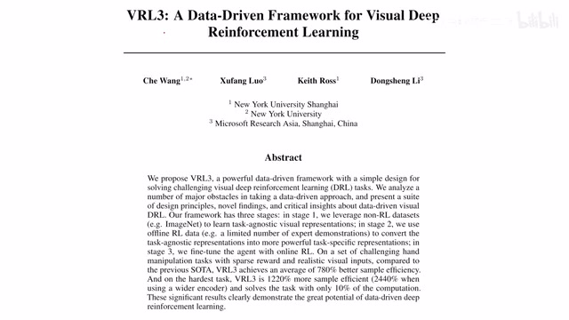
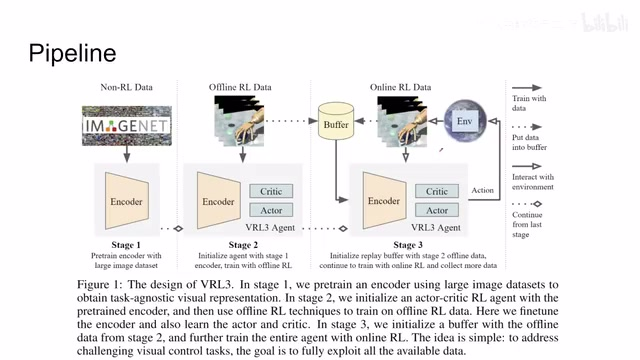
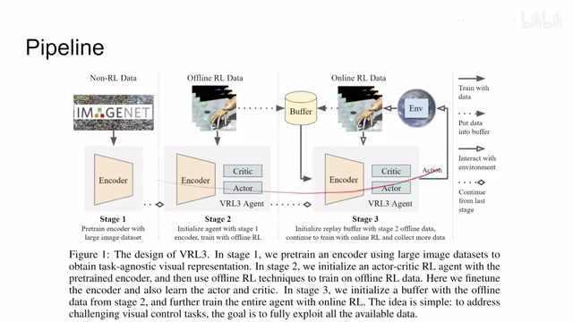
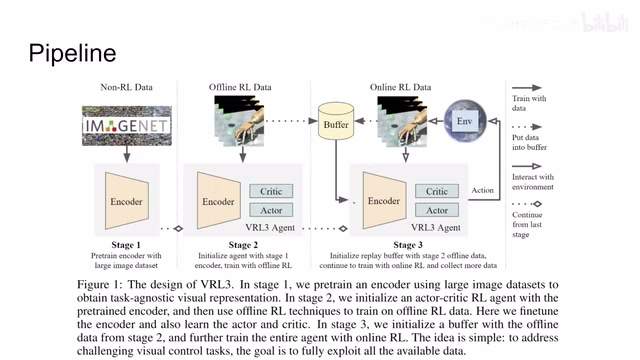
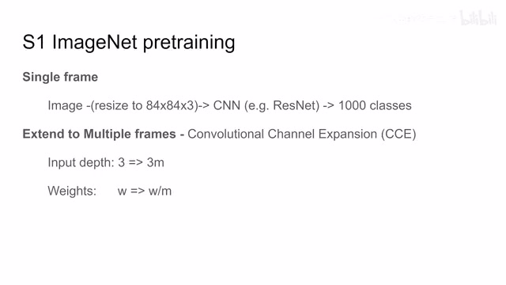
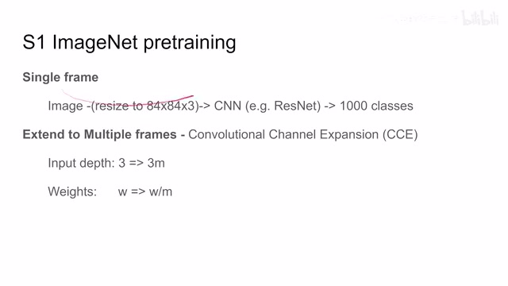
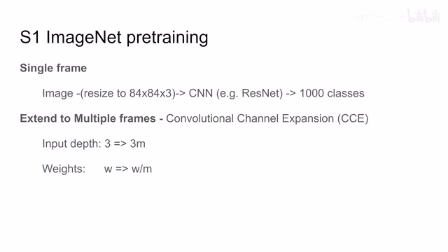
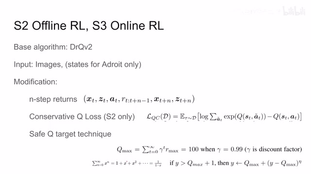
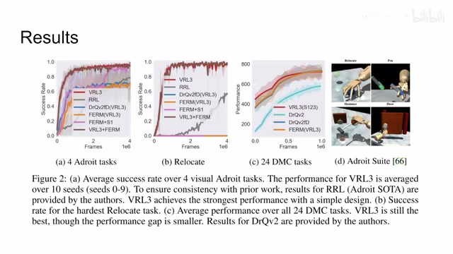

← 返回阅读库 · 原论文目录
论文讲解阅读文档 · 机器人学 · v141
VRL3 A Data-Driven Framework for Visual Deep Reinforcement L.[2202.10324]
视频时长 00:06:02；讲解文字 2,682 字符；提取讲解画面 11 张。按视频原顺序阅读，每段文字保留时间戳。
文字来自整段视频的自动语音转写，按自然停顿分段，并与 PPT / 论文页面 / 演示画面对齐。未将讲解压缩为摘要；术语、数字和口述公式请结合画面及原论文核对。 阅读稿已校正规范部分明确术语误识别；原始逐字稿和每处修改记录另行保留。
讲解画面为源视频截图（640×360），不是可编辑 PPT 文件。全片按每秒 2 帧扫描内容变化，逐步展开页保留；连续动画保留代表画面。清晰度受源视频限制。
下载完整资料包 · 含离线 HTML、PDF、Word、全部 PPT 画面和字幕。
原论文与材料
VRL3: A Data-Driven Framework for Visual Deep Reinforcement Learning · 下载完整 PDF（41 页）
按时间阅读
00:00:00–00:00:23 · 画面 001

00:00:00–00:00:23 · 画面 001大家好 今天我们来快速出一篇论文 VRL3Data-Driven Framework for Visual Deep Reinforcement Learning 这篇论文主要是从一个整个系统的角度非常全局的一个角度来探讨了我们如何使用额外的数据比如说像 ImageNet 用它来改善我们的 Reinforcement Learning 的系统下面我们直接来看首先是一个整体的 pipeline 这里我们看到整个文章的结构它分为三个阶段第一个就是用广泛的大的数据集比如说 ImageNet 去 pre-train 我们一个 encoder 然后做 offline reinforcement learning 最后再用 online 给它 fine-tune 一下那么这个流程看起来初看是跟 FERM 之前介绍它是非常像的
00:00:23–00:00:41 · 画面 002

00:00:23–00:00:41 · 画面 00200:00:41–00:00:42 · 画面 003

00:00:41–00:00:42 · 画面 00300:00:42–00:01:16 · 画面 004

00:00:42–00:01:16 · 画面 004但是其中很关键的一点呢在于本文的这个第二阶段它做的是一个这个 offline reinforcement learning 而不是说用这个 self-supervised learning 用 contrastive loss 去来 fine-tune 那么关于这一点呢我们在之前的一篇文章里面这个 self-supervised learning 加上这个 reinforcement learning 那一篇对吧我们探讨了说 self-supervised learning 真的对 reinforcement learning 有用吗所以某种程度上那篇文章的观察呢跟这里呢是十分相近的那我们下面具体来看到每一个环节里面
00:01:16–00:01:56 · 画面 005

00:01:16–00:01:56 · 画面 005首先第一个阶段是这个 ImageNet 的 PretrainingPretraining 呢它是用了这个有监督的方法就是 ImageNet 嘛你的一个图像送到一个 CNN 里面然后会出来 1000 类然后最后你把这个 1000 类的这个头扔掉就前面的东西就是你的 pretrain 好的这个 encoder 那首先注意呢这个 pretrain 的过程呢它是有监督的并不是说这个有监督无监督谁就一定好啊只是说大家注意一下这个事情那么再就是呢 ImageNet 的图像呢对吧它跟我们 reinforcement learning 使用的这个图像呢尺寸是不一样的所以呢在训练的时候呢作者直接把这个原始的图像 resize 到这个 reinforcement learning 使用的这个 84x84 这个图像
那么这个呢是基本的实现细节同时呢也是每次呢我只把一张图像送到这个 ImageNet 里面
00:01:56–00:01:57 · 画面 006

00:01:56–00:01:57 · 画面 00600:01:57–00:02:43 · 画面 007

00:01:57–00:02:43 · 画面 007那么这个时候呢当我们想把这个 encoder 迁移到我们的这个 reinforcement learning 的系统里面的时候呢就发现很多时候呢我们是希望把很多帧图像叠起来一起作为一个状态送到我们的这个 encoder 里面那这里呢苏热用了一个很简单的技巧就是只改动第一层这个卷积层那卷积层从一张图像比如说它的深度是 3 那扩展到了 M 张图像这是 3M 那么你呢首先直接把这个输入的这个权重直接复制到这 3m 个通道上然后呢所有的权重值呢都去除以这个 m 那么这样子呢对于后面的层来说我前面的变换呢是就比较小了那么然后呢我们来看到这个 offline 和这个 online reinforcement learning 的这一块那么首先这里作者使用的算法呢都是这个 drqv2 它呢就是 sota 了对吧然后呢它的这个输入呢
00:02:43–00:04:43 · 画面 008
00:02:43–00:04:43 · 画面 008那么对于这个数据集啊专门有这个机器手操作这个数据集作者额外的提供了这个每个手的这个关节的数据最后呢会和这个图像的这个 embedding 串接起来那么这个呢是针对这个数据集的额外的一点改动啊像那个 deepmind control suite 啊那个东西呢他就直接只用了这个图像那么然后我们就要看作者在这两个环节中对我们的网络进行了更改，首先第一个是用了 nstep returns，这个很好理解，就是我不是看紧连着的两个它的 state 的转移，我的目光可以放长远一点对吧，我一下子跳了很多步这样子，我的中间的 reward 可以积累起来，相对更加稳定一点，那么然后在第二阶段作者增加 conservative loss。
他呢就是 CQL 那篇文章对吧，本质上呢就是为了防止 Q 在学习的时候变得过大，就是 overestimation，就是自我感觉良好对吧，Q 值给的过大导致了这个系统有问题，那么关于他的细节呢，后面如果我们有机会我们可以单独讲一下那篇原始的 CQL 那篇 paper。那最后呢，这里作者还有一个叫做 Safe Q target technique，他的意思呢也是同样的，为了防止这个 Q 值过大，那怎么操作呢，这里呢作者首先把这个。
reward 给它限制到了一个最大值，比如说 0 到 1 之间，那么根据这个幂级数求和呢，加入这个 discount function 之后，你这个网络最大可能取到的 Q 值它呢就已经被限制住了，比如说你的 discount factor 是 0.99，那么你可能取到的最大的 Q 值也就是 100 了对吧，根据这个公式，那么因此呢，如果你发现你的网络它的这个 target network 比如说给的这个结果。
00:04:43–00:05:03 · 画面 009

00:04:43–00:05:03 · 画面 009大于了这个 100，大于了这种最大 Q 值的情况，那么这个时候呢，作者就使用这样一个公式，把我这个 Q 的这个 target 给它限制到这个接近这个 Qmax 的这个程度，那么这个公式呢，这个地方 eta 嘛就是一个 0 到 1 之间的数，好的，那么以上就是本文主要的技术细节啊。
00:05:03–00:06:01 · 画面 010

00:05:03–00:06:01 · 画面 010那么从结果来看呢，肯定是非常好的，那么这里呢，我非常非常推荐你到原文中查看作者各种详细的 ablation，各种仔细的讨论，包括每个阶段的这个设计最后是怎么取舍的等等，我非常推荐你查看原文，那么最后说点题外话啊，这篇文章跟我们那篇是非常有缘的啊。在开会之前呢，我们就相互发现了彼此的文章，然后相互引用了，那更巧的是呢，虽然我们那篇和这篇文章呢不在一个 poster session，但是我们在一千多个板子里面啊，恰好都用同一块板子，是一个非常巧的事情，那么我当时也是非常幸运啊，见到了本文的第一作者，他也是非常诚恳热情的帮我们梳理了整个这篇文章。
然后你如果读这篇文章，你会发现作者他想把所有的细节都告诉你，然后每一个设计的取舍他都会尽量能做一些 ablation 告诉你为什么这样设计，那么说了这么多，大家玩了命的引用好的，那么今天的视频就到这里，再见。
00:06:01–00:06:02 · 画面 011
00:06:01–00:06:02 · 画面 011转写与来源说明 · 0 个自动复核提示
保留 17 个原始语音片段，0 个片段触发自动复核提示。提示仅用于定位可能的术语、重复或识别问题，不等于已确认错误。
讲解画面为源视频截图（640×360），不是可编辑 PPT 文件。全片按每秒 2 帧扫描内容变化，逐步展开页保留；连续动画保留代表画面。清晰度受源视频限制。
原视频：paper/合集_2026-10-16_机器人学/[论文速览]VRL3 A Data-Driven Framework for Visual Deep Reinforcement L.[2202.10324].mp4
SHA-256：0e8168f69acacfe4ea116b97ce42a69d79e5e0aabfe92658a0278ba8b9586af0
全文按视频语音与画面制作。原论文可从上方链接下载；完整资料包保留全文、原始逐字稿、字幕和校对记录。